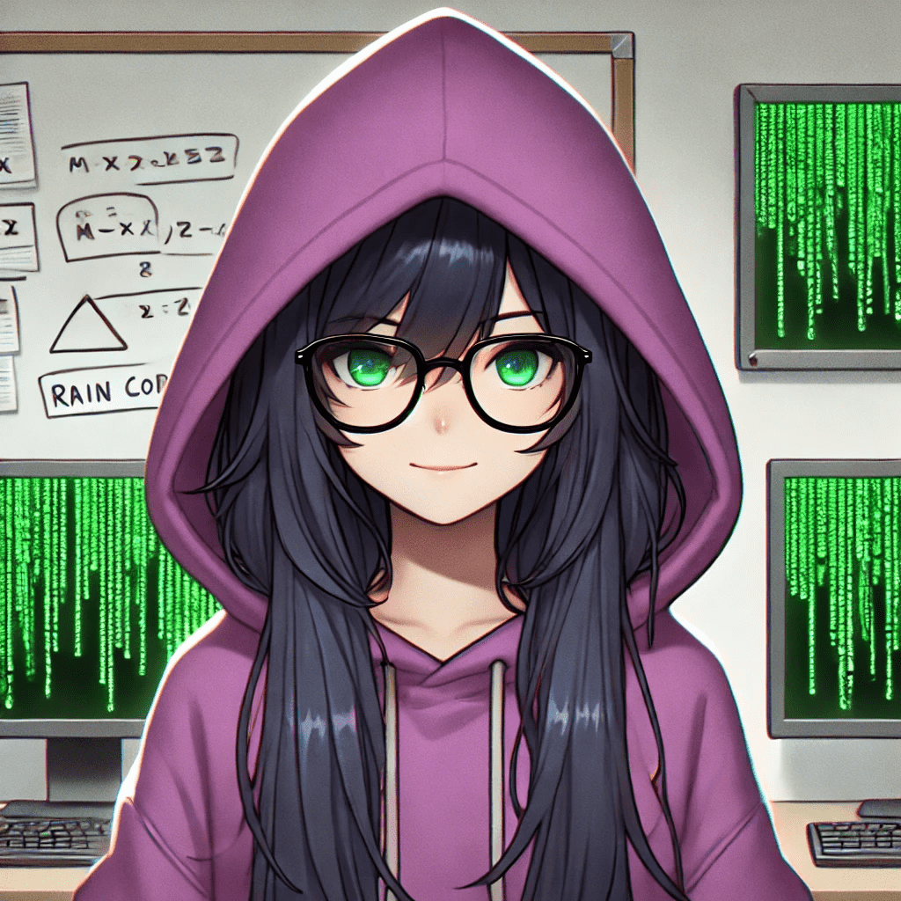

Alice Williams - Curriculum Vitae
Research Assistant, Teaching Assistant, AI Ed-Tech Startup Founder, and AI/ML Consultant.
"I believe in intuition and inspiration. Imagination is more important than knowledge. For knowledge is limited, whereas imagination embraces the entire world, stimulating progress, giving birth to evolution. It is, strictly speaking, a real factor in scientific research.”
― Albert Einstein
View My CV Below